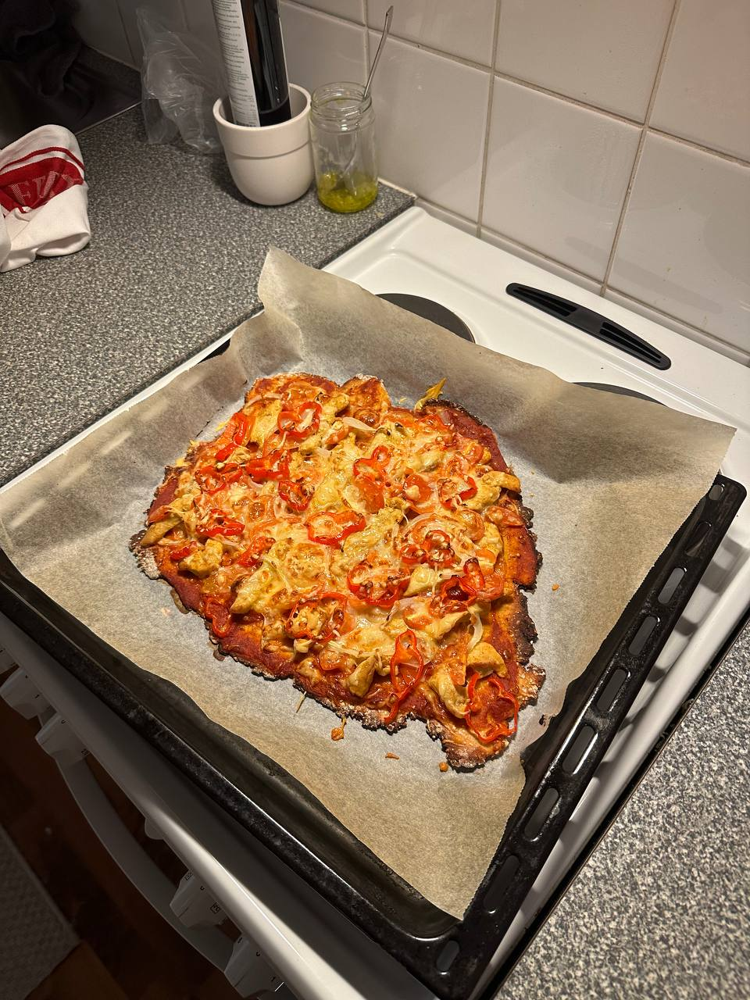

Healthy Pizza

Description
An easy and healthy pizza.
Ingridients
Dough
- 1dl greek yogurt
- 2dl all-purpose flour
Toppings
- 1dl Tomato sauce
- An Onion
- A Tomato
- 100g Chicken
- 30g Cheese
Steps
- Create pizza dough by mixing greek yogurt and all-purpose flour together
- Roll out the pizza dough
- Add the toppings
- Bake at 200 degrees for 15 minutes